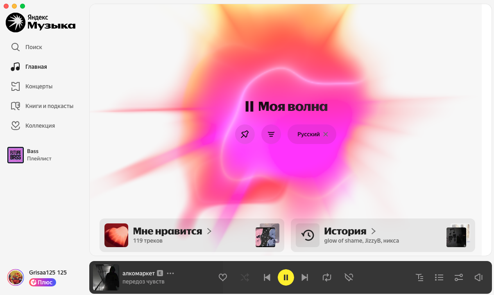
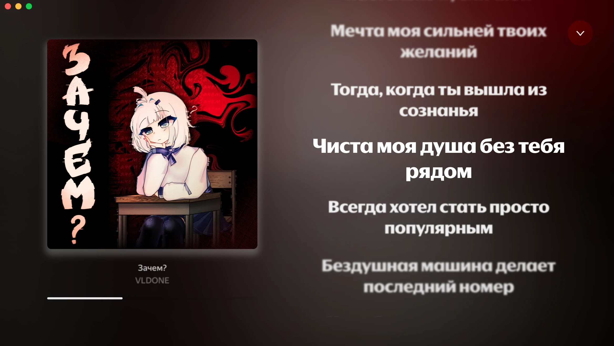

Автообновления
Приложение проверяет новые версии, загружает их и предлагает установить обновление.
● НОВОЕ В 1.1.0ОБНОВЛЕНИЕ / ВЕРСИЯ 1.1.0
TuneRift 1.1.0 добавляет автообновления, подключение Яндекс Станции по Bluetooth, больше настроек и улучшения FckCensor — сохраняя привычный интерфейс Яндекс Музыки.
NEW АВТООБНОВЛЕНИЯ · BLUETOOTH · БОЛЬШЕ НАСТРОЕК
[ 00 / ЗАЧЕМ ]
Новый дизайн оказался менее удобным. TuneRift возвращает знакомую структуру и не добавляет шум ради функций.
[ 01 / ВОЗВРАЩЁННЫЙ ИНТЕРФЕЙС ]
Знакомая навигация, «Моя волна», история и нижний плеер снова собраны в одном спокойном рабочем пространстве.

[ 02 / ПОЛНЫЙ ЭКРАН ]
Готовый полноэкранный режим собирает крупную обложку, строки текущего трека и управление в более сосредоточенный интерфейс.

[ 03 / НОВОЕ В 1.1.0 ]
Приложение проверяет новые версии, загружает их и предлагает установить обновление.
● НОВОЕ В 1.1.0Подключение к Станции и управление воспроизведением; автоматическое подключение можно включить в настройках.
● НАСТРАИВАЕМЫЙ РЕЖИМБыстрые переключатели TuneRift в меню аккаунта и дополнительные параметры Discord, Bluetooth и аддонов.
● ДОПОЛНЕНОИсправлена подмена треков; обработка адаптирована к изменениям сайта и не повторяет лишние сканирования.
● ИСПРАВЛЕНООбновлена синхронизация состояния воспроизведения и поведения полноэкранной лирики.
● ИСПРАВЛЕНИЯРазмытие следует за текущей строкой, а не остаётся на уже прокрученных фрагментах.
● ОБНОВЛЕНО[ 05 / СКАЧИВАНИЕ ]
Скачай последнюю опубликованную сборку для Windows, macOS или Linux. Ссылки ведут на актуальный GitHub-релиз.
Установщик TuneRift для обычного ПК.
↓ СКАЧАТЬ ПОСЛЕДНЮЮ 02Универсальная DMG-сборка для Mac.
↓ СКАЧАТЬ ПОСЛЕДНЮЮ 03Настольная x64-сборка для Linux.
↓ СКАЧАТЬ ПОСЛЕДНЮЮССЫЛКИ НА ПОСЛЕДНИЙ ОПУБЛИКОВАННЫЙ РЕЛИЗ · WINDOWS / MACOS / LINUX
[ 06 / ОБНОВЛЕНИЕ 1.1.0 ]
Версия 1.1.0 добавляет автообновления, подключение Яндекс Станции по Bluetooth, дополнительные настройки и улучшения FckCensor.
● ОБНОВЛЕНИЕ / V1.1.0
Открыть релизы ↗